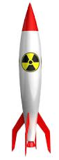

<!--
    Only the missile, the time box and
    the points box. UFOs will be created in
    the typescript component.
-->


<div #points id='points' style="z-index:1">0</div>
<div #time id='time'>0</div>

<p *ngIf="showStartMessage">Press space to start!</p>
